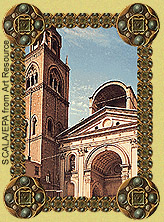
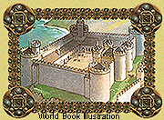

Has fire ravaged your old castle? Do you worry about security? Do not remodel! Move, my lord, move - to a deluxe castle from Century 15 Realty.
| |
| In your new castle, you will: | |
 |
LAUGH AT YOUR FOES You will sleep soundly within this mighty fortress knowing that water and stone are protecting you. In times of peace, the castle's broad, deep moat reflects the breathtaking beauty of the surrounding land. In times of trouble, the moat provides a formidable barrier to attackers. Even the boldest enemies will be thoroughly discouraged when they see your massive stone walls and lofty battlements! Best of all, this great stronghold rests on genuine bedrock, so forget any worries about enemy miners tunneling beneath your walls.
|
| Special security features at this residence include: |
|
 | ENJOY THE AMBIANCE Retire to the serene, elaborately decorated chapel and give thanks for your good fortune in finding this choice property. From the castle's highest tower, you can enjoy a panorama rich in fields, forests, and game. And it's all yours!
|
| This unique residence offers an attractive decor and every modern convenience: |
|
| All offers considered seriously (gold preferred). | |